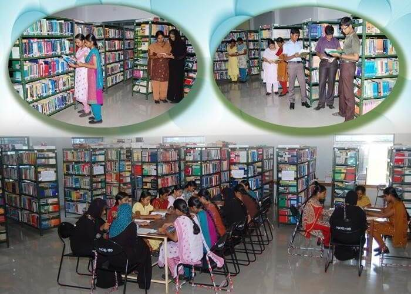
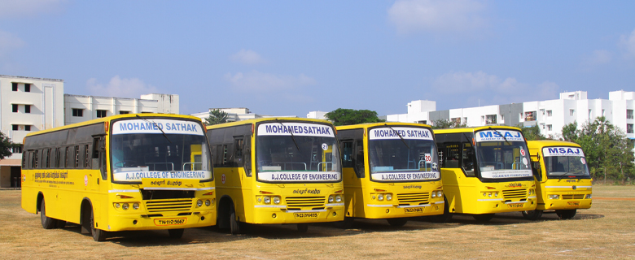

Our Facilities
"Taking you to Tomorrows's Technology"

World Class Library
The library is a treasure trove of Knowledge, houseing an extensive collection of books, journals, periodicals, and digital resources.

Start Up Cells
The Vision of the Startup cell is to promote and facilitate the study and practice of entrepreneurship, connect students with experienced alumni and local entrepreneurs and turn them into dynamic business oriented young leaders. .

Transpotation
Transportation is the center of the world! It is the glue of our daily lives. When it goes well, we don't see it. When it goes wrong, it negatively colors our day, makes us feel angry and impotent, curtails our possibilities.